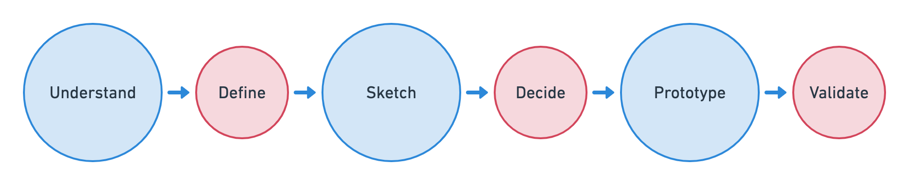
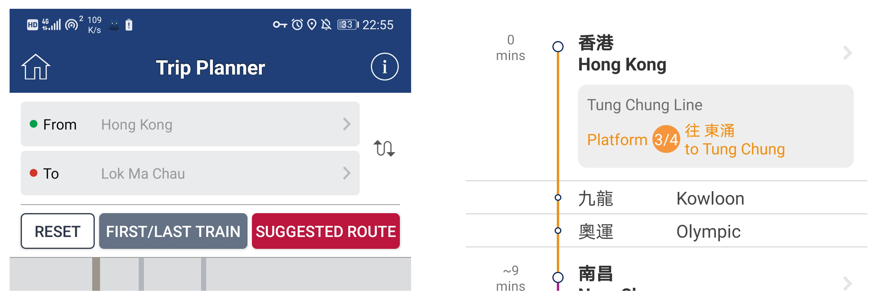
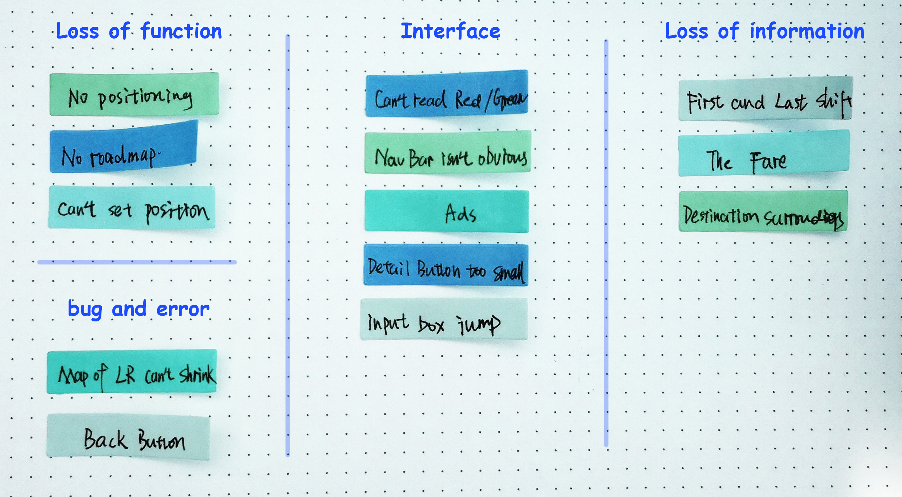
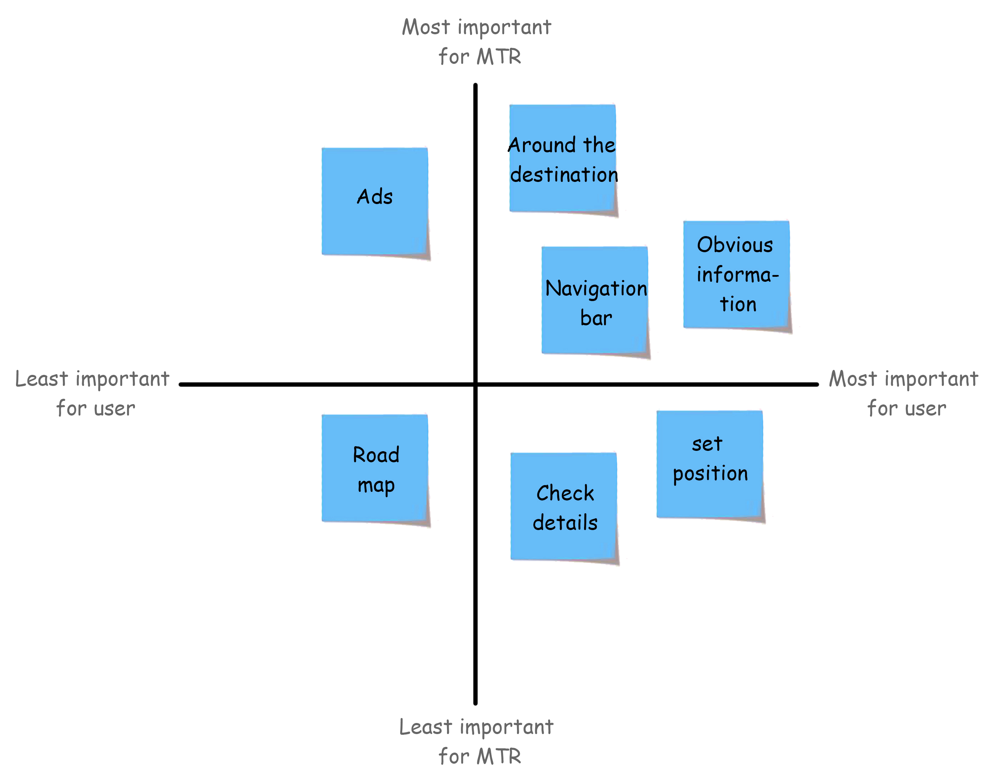
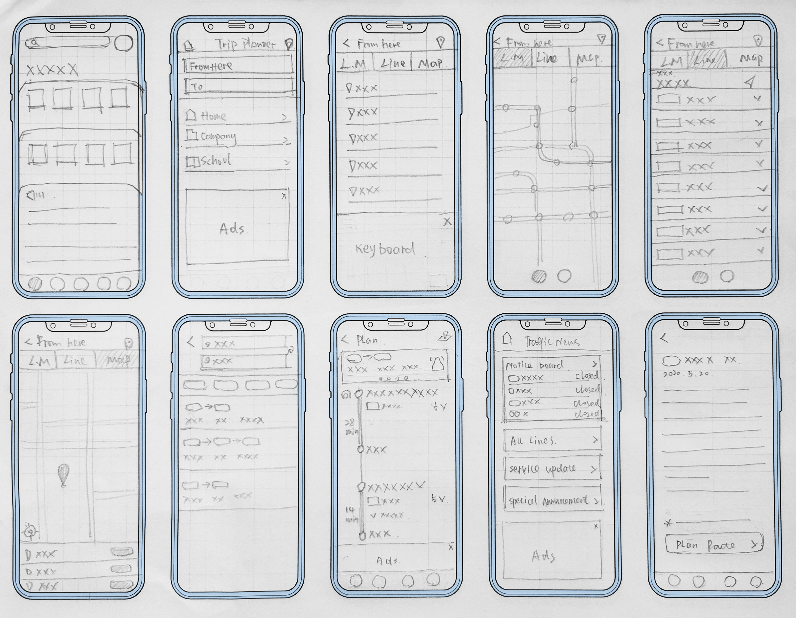
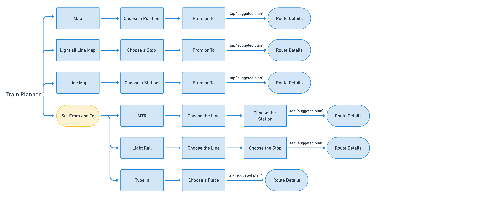
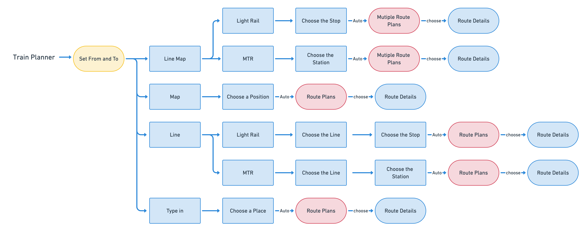
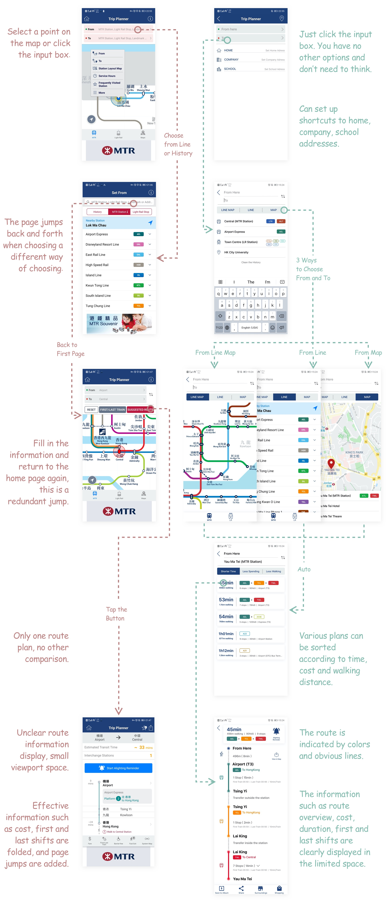
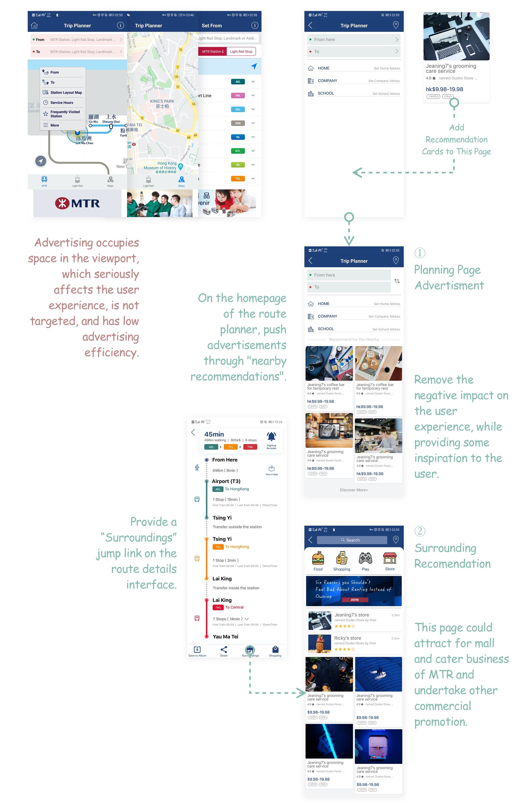
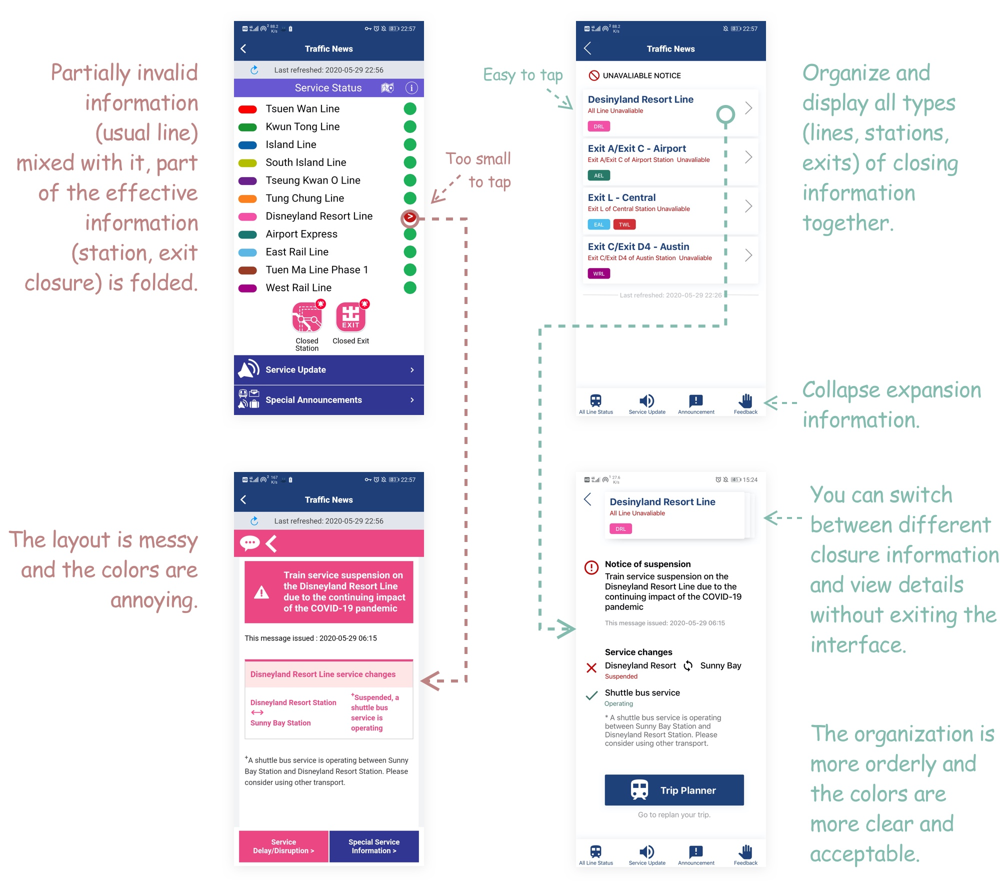

MTR Mobile:
Trip Planner and Traffic News
——A UX Case Study
The Situation
Whether commuting or traveling, the metro is a great way to choose. In big cities, the subway network especially convenient without traffic jams.
MTR is recognized as the world's leading railway system. It is known for its safety, reliability, excellent customer service and high cost efficiency. All passenger transport services carry an average of 5.9 million passengers per day on every Sunday. MTR Mobile is a smart phone application commissioned by MTR, which was launched in 2010.
The story begins with a journey to HK. MTR Corporation has contracted most of the railway business in HK, which is the transportation that most HK citizens and tourists will choose. However, compared with HK's extensive railway lines, MTR Mobile is not satisfactory, especially the tools, which are the most important functions for users. First of all, when I used it to plan routes, it was not very smooth. Secondly, the HK railways do not popularize QR code entry, but the entry gates that support QR codes have begun to be deployed. This requires both software and hardware to work together, so QR code is also urgently needed by MTR Mobile and will soon become very important functions.
Based on these, I decided to conduct further research in order to discover other common pain points and revise the design of tools branch of MTR Mobile.
The Goal
· Determine if my confusion is common.
· Test the frequently used tools to uncover issues.
· Understand the discover ability issues in interfaces.
· Propose design solutions and validate them.
The Plan
I decided to run a design sprint, as a side-project after work. I followed GV’s process for this sprint.
*The sprint is a five-day process for answering critical business questions through design, prototyping, and testing ideas with customers.
Because I had to work during the day, this five-day front might be longer. I tried to improve my efficiency and still decided to complete it within a week, of course including the weekend.
Understand, Define
Search Information
I need to ascertain what the problems exactly are.
Because it was during the epidemic, it was inconvenient for me to go out for field research. I decided to read reviews in App store and Google play to understand the general confusion of users.

*From App Store

*From Google Play Store
Usability Inspection
After that, I did a usability inspection afterwards, reviewing the current system against a set of heuristics.
Structure Analysis
I carefully browse the page of the app and had more understanding of it after doing that. Below are the main features of MTR Tools:
· Trip Plan
Instantly provide MTR ride routes and other public transport connection options.
· Traffic News
The Traffic News function displays the real-time train status of each MTR route in green, yellow or red.
· Alighting Remind
There are tips for transfer / drop-off, you will know when you get there.
· Next Train---download another app
You can check the arrival time of the next train of MTR.
In order to get a clearer view of the system, I laid out the functional architecture of MTR Tools.

Experience the Use
By observing comments and empathizing, I found that “route planner” and “traffic news” are the most needed tools. The function of the “next train” is also widely needed, but it cannot be supported in MTR Mobile, which should be integrated. I decided to make “route planner” and “traffic news” as my main revision work.
I also assumed a scenario to experience and use.
“I am a tourist from the Mainland to HK and want to check the metro route from the airport to Central station and follow the route.”
*The scenario assumption is based on that HK is a tourist city, and many tourists visit every year, especially from the mainland.
Here is my journey map of planning the route:

The following is my experience and analysis after using it.
Actually, there are multiple ways to choose your departure and destination：
· Select from metro line,
· Select from history,
· Choose on the map,
· Type in.

*ways of choose departure and destination
They are set by totally different logic. For example, if you want to select a station by selecting a metro line, you need to tap the “from” first, after that the line list appear (the map is covered), then choose your line and your station on it. However, if you need to choose a station from the line map, you should tap the station first, then there will be a window appearing beside the station and you can select “from” or “to” in this window.
After completing the departure and destination, it’s time to show me the route. But one confusing thing is that why there are three button below the chart? All I wanted is the route as soon as possible. As for the two other button, If I choose the wrong one, just choose again. Why choose to clear it? I don’t even know which line to take, Why should I check the first and last shift time?
*three buttons *narrow route area
Finally I arrived the route interface. But the route area was uncomfortably narrow. It is displayed in a short screen interval, I can only swipe back and forth to view the complete route. I can’t see the whole picture, and I can’t save it. What should I do to remember the route?
Usability Tests
During this time, I was really inconvenient to find the right person to do a lot offline usability test. So I decided to take some online test with my friends. I really thanked them for helping me to carry the study on.
Friend1 : He is studying for his master’s degree in HKU, going to school by metro for daily routine. Friend2 : She is my roommate, I told her to assume herself as a tourist in HK. Friend3 : She is my best friend, I set her the assume as Friend2. Friend4 : He is Friend1’s classmate who is working as an intern in HK. He goes to work from his rental room by metro and city bus. Friend5 : He is Friend1’s father, who is an employee of an insurance company. He occasionally drive and often take the metro.
I asked my friends to use MTR Mobile while making a video call with me. Here are the tasks I let them perform:
· Plan your trip from airport to your school/company/sight
· Remember the route
· Check the line closure and details
Test Results Collation
By observing their use and listening to them, I recorded a number of problems and classified them.
*Affinity mapping pain points on notebook, each color represents a user
Then I prioritised each pain point based on its importance to the user as well as its importance to MTR. My assumptions of the importance to users were based on conversations with the testees. My assumptions of the importance to MTR were based on my analysis of their website and marketing materials. Planning the route and viewing information are the most important tools in the app, so the visualization of information is very important for users and MTR, and advertising may be the need to run the app.
*Prioritising pain points on a 2x2 matrix
Define the Problem
I combined the analysis of my experience and the results of the usability test to summarize four pain points that are more important to users and MTR. I redefined the pain points below.
Pain Point 1: The logic of the ways of choosing “from” and “to” is not unified.
Route planning is one of the core functions of MTR Mobile, and the selecting departure and destination is the beginning of using this tool. It is very important to make a good first impression, so a smooth selection experience is of great significance to both users and MTR. But in this version the selection is confusing, and a unified logic is needed to allow users to choose at will.

There is a gap between the designer model and the user mental model in the way of selecting from the map. Users are used to tapping "from" and" to" to set up the departure and destination, so I may need to incorporate this into the interface after tapping.
Pain Point 2: The information on the route planning interface hide too deep, making it inconvenient to obtain.
At the route interface, the effective information is heavily folded and the interface space is wasted. It can directly display the valuable information such as ticket price, travel time, platform information and station information to users.

This pain point is mainly a problem of unreasonable interface planning. I need to replan the layout of the interface to fully present the valid information to the user. Try to present the entire route as completely as possible and provide the function to save to the local so that users can get and remember the route plan.
Pain Point 3: Product advertising has seriously affected the user experience.
Advertisements will be placed in most apps, but the negative impact of ads on user experience should be minimized. Ads in the app have even become one of the most criticized defects of users, which is harmful to the reputation of MTR.
Based on these, I should reconsider the way ads are inserted. How can we maintain advertising revenue with a small negative impact on users, or change the economic model of the app, and establish a more win-win operating method. But I think changing operating method may be beyond the scope of my current research, so I still focus on the way in which advertising and user experience live in harmony.
Pain Point 4: Traffic information is not clearly communicated, and it is inconvenient to view details.
Traffic news is also one of the most commonly used tools for users, especially for skilled users who do not need route planning, viewing traffic news may be the biggest motivator for opening apps. However, in the traffic news module, the way information is displayed is distressing, and the detail viewing function lacks user-friendliness.

As a notification interface, the information that the user cares most about and wants to see should be integrated so that the user can understand all anomalies at a glance. Information about those lines, stations, and exits that are operating normally should be hidden. On this basis, it can provide functions of custom search and expand information .
Ideating the Solution
After understanding the problem and choosing a target for the study, I got to focus on solutions. This started with inspiration: a review of existing ideas to remix and improve. I thought about the possibility for each pain point and decided the plan by collecting inspiration, combing information and sketching.
I came up with several potential solutions to each of the pain points and made some rough UI sketches.

Pain Point 1: The logic of the ways of choosing “from” and “to” is not unified.
I drew a flowchart of the execution of the planning tasks and first optimized at the flowchart.
I optimized the route planning process so that the selection of departure and destination kept the same logic, that is, the from/to was determined first, and then the choice was made in different ways according to the needs of different users.
BEFORE
AFTER

Pain Point 2: The information on the route planning interface hide too deep, making it inconvenient to obtain.
I made a high-fidelity prototype in sketch, and solved the pain points 1 and 2 together. The following is a comparison of the revised process and with the original version, as well as my analysis on how pain points have been solved.
BEFORE AFTER

Pain Point 3: Product advertising has seriously affected the user experience.
I discussed two ways to place ads, which may require higher development costs. But if the removal of advertising is not acceptable, this may be a way to improve the user experience, and also an idea that can benefit MTR.
The following is a high-fidelity mockups and analysis.
BEFORE AFTER

Pain Point 4: Traffic information is not clearly communicated, and it is inconvenient to view details.
I screened and sorted out the information that traffic news should convey, and reorganized the interface structure, so that the information was expressed more clearly and efficiently. At the same time taking into account the needs of users, jump links for trip planner are added.
BEFORE AFTER
